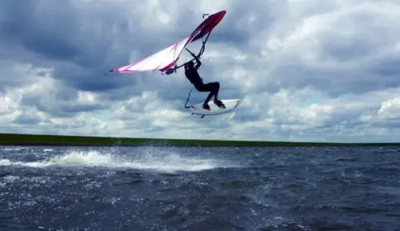
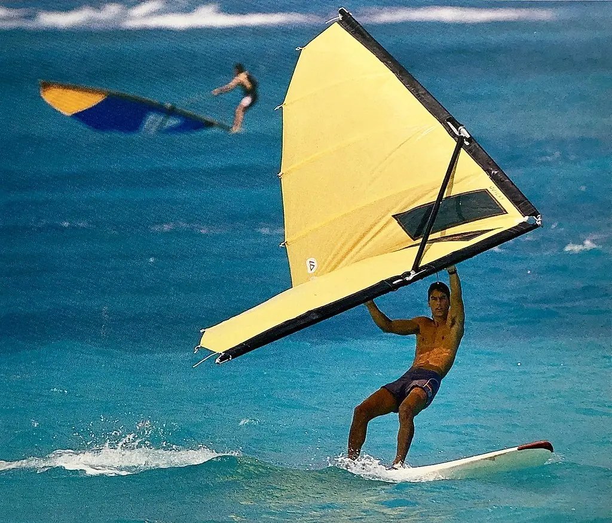
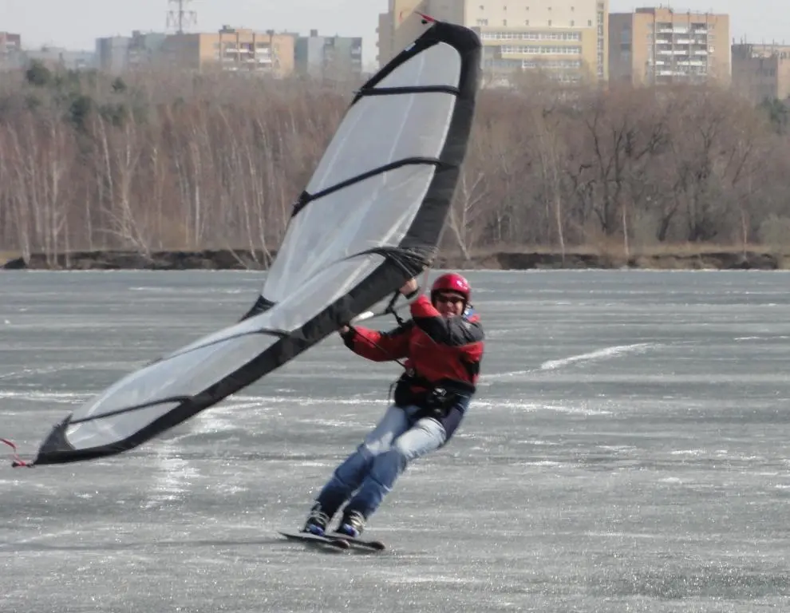
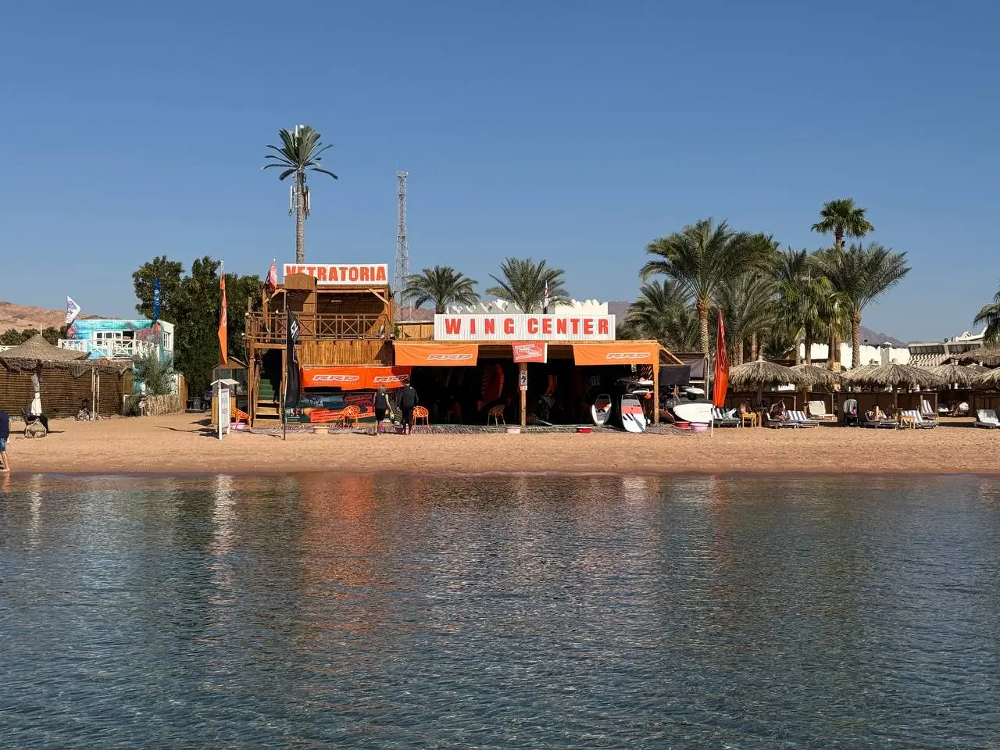
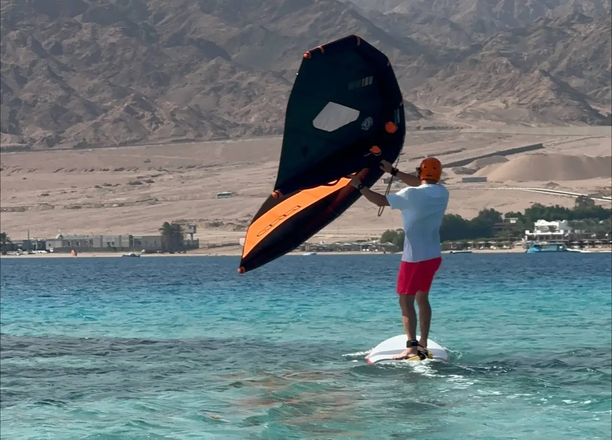
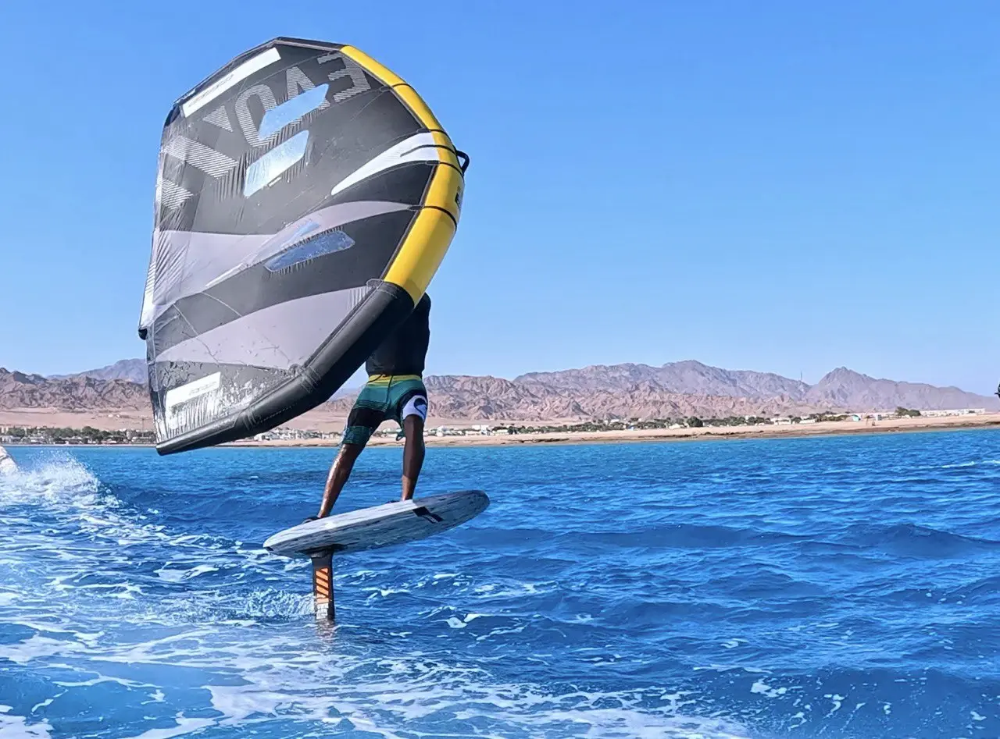

Представь: ты стоишь на доске, в руках — лёгкое крыло, ветер бьёт в лицо, и… ты взлетаешь над волной. Не сказка, а вингфойл — спорт, который объединил сёрфинг, ветер и технологии.
Но как он появился? Давай прогуляемся по истории, где были и забытые изобретения, и случайные открытия, и даже вирусные ролики.
Гидрофойлы и первые эксперименты
Всё началось в 1960-х, когда американец Уолтер Вудвард запатентовал гидрофойл — подводное крыло, поднимающее лодки над водой. Но технология была сложной, и массовым спортом это не стало.
В 1980-х энтузиасты виндсёрфинга начали экспериментировать с досками на фойлах. Тогда же появились первые прототипы ручных крыльев:
- Джим Дрейк и Ули Станчу разработали жёсткое крыло, похожее на веер. В 1982 году их друг, виндсёрфер Пит Кабрина, испытал его на соревнованиях в Кайлуа. Фото с жёлтым крылом попало в журналы, но идею посчитали странной: «Зачем держать парус в руках?»
- Роланд Ле Бай из Франции пытался создать «парус без мачты», но технологии 1980-х не позволили сделать его лёгким.
- Сэми Туронен из Финляндии придумал Skimbat, позднее известный как Kitewing, — компактное крыло для снега и льда.



Сёрфер, который не хотел грести
Прошли годы. На Гавайях жил Алекс Агера — фанат виндсёрфинга. Однажды его друг Кай Ленни, профессиональный сёрфер, спросил: «А можно сделать доску, которая летает сама? Без паруса, только за счёт волн?»
Алекс загорелся идеей. Он прикрутил к доске подводное крыло и попробовал «ловить» энергию океана. Получалось криво, но круто. Правда, грести всё равно приходилось. И тут на сцену вышел Флэш Остин.
«Бета-винг» и доска с фойлом
Флэш — чемпион по кайтсёрфингу и по совместительству «сумасшедший профессор». В 2018 году он взял странное крыло, доску для SUP-фойла и заявил: «А что, если совместить?» Друзья крутили у виска, но Флэш упорно таскал свой «конструктор» на пляжи Мауи.
И однажды он взлетел. Факт был налицо: крыло в руках + фойл под доской = магия. В социальных сетях зашумели: «Это же новый спорт!»
Надувные крылья и вирусный взрыв
Историю подхватил Кен Виннер. Он придумал, как сделать крыло надувным — лёгким и удобным. Бренды Duotone, Naish и другие начали выпускать свои комплекты. А потом случился «винг-прорыв» Кая Ленни.
В апреле 2019 года Кай опубликовал видео, где парил над волнами с крылом в руках, и подписал: «This is Wing Surfing». Ролик взорвал YouTube. Все бросились покупать крылья, а производители — соревноваться, кто сделает лучше. К концу года вингфойл был везде: от Калифорнии до Австралии.
Wing Center Dahab
Место, где мечты о полёте становятся реальностью
В 2022 году в Дахабе появилось место, где мечты о полёте над водой становятся реальностью, — Wing Center Dahab. Мы не просто школа, а настоящая стартовая площадка для тех, кто хочет научиться вингфойлу быстро, безопасно и с удовольствием.
Почему выбирают нас?
- Современное оборудование RRD. Большой выбор крыльев и досок позволяет постепенно уменьшать размер снаряжения. Комплект найдётся для каждого — от новичка до опытного райдера.
- Отработанная методика. Мы помогли взлететь сотням людей. Наши инструкторы объясняют сложное простыми словами, а почувствовать первый полёт можно уже на уроке «Фойл + лодка».
- Тепло и ветрено. В Дахабе солнечно круглый год, вода остаётся тёплой даже зимой, а стабильный ветер создаёт идеальные условия для обучения.



